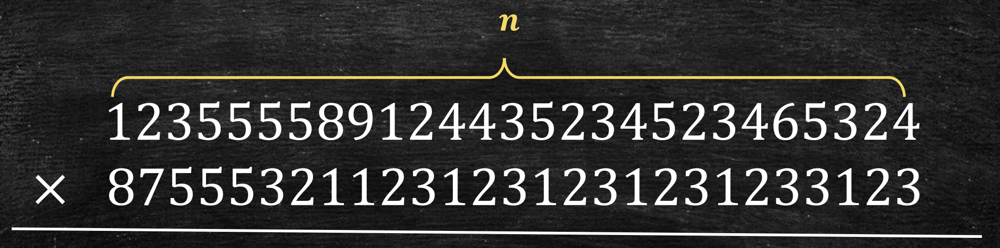
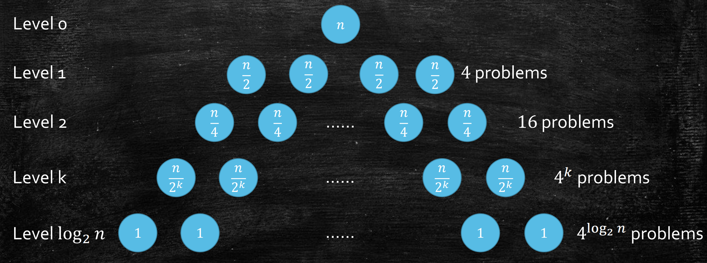

分治法(1)：Karatsuba算法与大O表示法
本文将以大整数乘法的Karatsuba算法为例，介绍分治算法（Divide and Conquer），并介绍时间复杂度分析的大O表示法。
算法（algorithm） 一词来自于9世纪波斯数学家al-Khwarizmi。因为他撰写了一本《印度计算书》，其开篇为"Dixit Algorismi"，意为“al-Khwarizmi如是说”，而这个词逐渐演化到了今天我们熟知的algorithm一词。
那就让我们从一种数学运算——整数乘法开始学习算法。
Karatsuba算法
当我们计算简单的乘法，如时，用简单的竖式手算非常轻松（对于计算机更加轻松）。但当乘数的位数不断增大，乘法的运算量也随之加大。那么有没有方法能减少大整数乘法中的运算量？
从大整数乘法开始

让我们先看看位大整数乘法的运算量。如果我们以1位数的加法或乘法为一次运算，那么位的大整数乘法需要多少次运算？由小学数学可知，大约有
- 次1位数乘法
- 次1位数加法（进位）
- 次位数加法
因此，我们总共要进行大约次一位数运算，可以写作。
注意，我们在这里用大O表示法省略了常数项，是因为我们只关心很大的情况。
那么，我们是否有办法做得更好呢？
分治法的首次尝试
让我们尝试分治法！分治法，顾名思义，就是把原来的问题不断划分为规模更小的问题，直至最简单的情况。

如何设计
分治法的设计无非考虑两个问题：
- 怎么分（如何将原问题划分为更小的问题）
- 怎么治（如何将小问题的解合并为原问题的解）
再这里，我们可以将乘数划分为高位和低位（怎么分），两两计算乘积，再按权重相加（怎么治）。举个例子，我们用分治法计算：
或者更一般地，
这样，我们就把一个位数乘法的问题，分成了4个位数乘法的问题。而这4个小问题，将会按同样的方法继续递归调用，直到问题规模缩小到1位数乘法。
注意，我们在这里假定是2的整数次幂。事实上，如果不是2的整数幂，我们可以在高位补0。
如何分析
那么，我们的算法有没有比原来做得更好？也就是说，我们做了多少次1位数运算？在这里，我们用分治法中最经典的树形图进行分析。

这里，我们将每个大问题分出4个小问题，因此每一层的问题个数都是上一层的4倍。而由于我们每次能将问题规模缩小一半，即递归树的层数为，最终一共会分出个基本问题。
在分治法中，我们的时间代价主要有两方面：
- 分的代价：解决最终分出的所有最小规模的问题（即基本问题）
- 治的代价：每次将小问题的解合并为大问题的解
由于解决每个基本问题的需要完成1次1位数乘法，我们一共需要完成
次1位数乘法！也就是说，我们需要做超过次1位数运算！
显然，我们的朴素分治算法并没有让计算量变得更小。这似乎也是符合直觉的，因为我们只是把要计算的乘法交换了计算顺序，但基本计算的总量并没有变。以为例，在几次递归之后，仍归结为每一位之间的两两相乘，即16个基本问题，并没有减少1位数运算的数量。
那么，有没有办法真正减少计算量呢？
Karatsuba算法
想要减少计算，我们必须看看我们是否做了冗余的计算，或者说有没有计算可以简化。
前面已经推导过，
也就是说，为了求出，我们需要知道、和。而我们刚才计算了哪些呢？、、和。换句话说，其实我们不需要知道和分别是多少，只需要知道的值就够了。
拓展到矩阵乘法
时间复杂度
基本模型
大O表示法
注：本文中所有图片均来自张宇昊老师的课程PPT。